Geometric Sequences and Sums
Sequence
A Sequence is a set of things (usually numbers) that are in order.

Geometric Sequences
In a Geometric Sequence each term is found by multiplying the previous term by a constant.
Example:
| 1, 2, 4, 8, 16, 32, 64, 128, 256, ... |
This sequence has a factor of 2 between each number.
Each term (except the first term) is found by multiplying the previous term by 2.
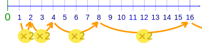
In General we write a Geometric Sequence like this:
{a, ar, ar2, ar3, ... }
where:
- a is the first term, and
- r is the factor between the terms (called the "common ratio")
Example: {1,2,4,8,...}
The sequence starts at 1 and doubles each time, so
- a=1 (the first term)
- r=2 (the "common ratio" between terms is a doubling)
And we get:
{a, ar, ar2, ar3, ... }
= {1, 1×2, 1×22, 1×23, ... }
= {1, 2, 4, 8, ... }
But be careful, r should not be 0:
- When r=0, we get the sequence {a,0,0,...} which is not geometric
The Rule
We can also calculate any term using the Rule:
xn = ar(n-1)
(We use "n-1" because ar0 is for the 1st term)
Example:
| 10, 30, 90, 270, 810, 2430, ... |
This sequence has a factor of 3 between each number.
The values of a and r are:
- a = 10 (the first term)
- r = 3 (the "common ratio")
The Rule for any term is:
xn = 10 × 3(n-1)
So, the 4th term is:
x4 = 10×3(4-1) = 10×33 = 10×27 = 270
And the 10th term is:
x10 = 10×3(10-1) = 10×39 = 10×19683 = 196830
A Geometric Sequence can also have smaller and smaller values:
Example:
| 4, 2, 1, 0.5, 0.25, ... |
This sequence has a factor of 0.5 (a half) between each number.
Its Rule is xn = 4 × (0.5)n-1
Why "Geometric" Sequence?
Because it is like increasing the dimensions in geometry:
| 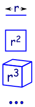 | a line is 1-dimensional and has a length of r |
| in 2 dimensions a square has an area of r2 | |
| in 3 dimensions a cube has volume r3 | |
| etc (yes we can have 4 and more dimensions in mathematics). |
Geometric Sequences are sometimes called Geometric Progressions (G.P.’s)
Summing a Geometric Series
To sum these:
a + ar + ar2 + ... + ar(n-1)
(Each term is ark, where k starts at 0 and goes up to n-1)
We can use this handy formula:
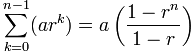
a is the first term
r is the "common ratio" between terms
n is the number of terms
What is that funny Σ symbol? It is called Sigma Notation
| (called Sigma) means "sum up" |
And below and above it are shown the starting and ending values:

It says "Sum up n where n goes from 1 to 4. Answer=10
The formula is easy to use ... just "plug in" the values of a, r and n
Example: Sum the first 4 terms of
| 10, 30, 90, 270, 810, 2430, ... |
This sequence has a factor of 3 between each number.
The values of a, r and n are:
- a = 10 (the first term)
- r = 3 (the "common ratio")
- n = 4 (we want to sum the first 4 terms)
So:
Becomes:
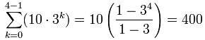
You can check it yourself:
10 + 30 + 90 + 270 = 400
And, yes, it is easier to just add them in this example, as there are only 4 terms. But imagine adding 50 terms ... then the formula is much easier.
Using the Formula
Let's see the formula in action:
Example: Grains of Rice on a Chess Board
On the page Binary Digits we give an example of grains of rice on a chess board. The question is asked:
When we place rice on a chess board:
- 1 grain on the first square,
- 2 grains on the second square,
- 4 grains on the third and so on,
- ...
... doubling the grains of rice on each square ...
... how many grains of rice in total?
So we have:
- a = 1 (the first term)
- r = 2 (doubles each time)
- n = 64 (64 squares on a chess board)
So:
Becomes:
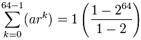
= 1−264−1 = 264 − 1
= 18,446,744,073,709,551,615
Which was exactly the result we got on the Binary Digits page (thank goodness!)
And another example, this time with r less than 1:
Example: Add up the first 10 terms of the Geometric Sequence that halves each time:
{ 1/2, 1/4, 1/8, 1/16, ... }
The values of a, r and n are:
- a = ½ (the first term)
- r = ½ (halves each time)
- n = 10 (10 terms to add)
So:
Becomes:
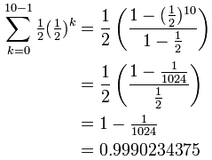
Very close to 1.
(Question: if we continue to increase n, what happens?)
Why Does the Formula Work?
Let's see why the formula works, because we get to use an interesting "trick" which is worth knowing.
Notice that S and S·r are similar?
Now subtract them!
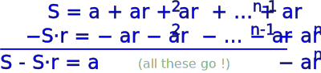
Wow! All the terms in the middle neatly cancel out.
(Which is a neat trick)
By subtracting S·r from S we get a simple result:
S − S·r = a − arn
Let's rearrange it to find S:
Which is our formula (ta-da!):
Infinite Geometric Series
So what happens when n goes to infinity?
We can use this formula:
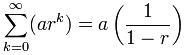
But be careful:
r must be between (but not including) −1 and 1
and r should not be 0 because the sequence {a,0,0,...} is not geometric
So our infnite geometric series has a finite sum when the ratio is less than 1 (and greater than −1)
Let's bring back our previous example, and see what happens:
Example: Add up ALL the terms of the Geometric Sequence that halves each time:
{ 12, 14, 18, 116, ... }
We have:
- a = ½ (the first term)
- r = ½ (halves each time)
And so:
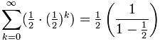
= ½×1½ = 1
Yes, adding 12 + 14 + 18 + ... etc equals exactly 1.
Don't believe me? Just look at this square: By adding up 12 + 14 + 18 + ... we end up with the whole thing! |
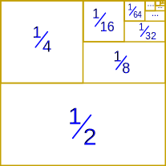 |
Recurring Decimal
On another page we asked "Does 0.999... equal 1?", well, let us see if we can calculate it:
Example: Calculate 0.999...
We can write a recurring decimal as a sum like this:

And now we can use the formula:
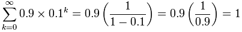
Yes! 0.999... does equal 1.
So there we have it ... Geometric Sequences (and their sums) can do all sorts of amazing and powerful things.